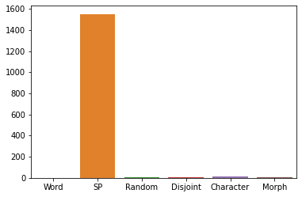

Docs¶
[1]:
#!pip3 install tkseem
Frequency Tokenizer¶
[2]:
import tkseem as tk
Read, preprocess then train
[3]:
tokenizer = tk.WordTokenizer()
tokenizer.train('samples/data.txt')
Training WordTokenizer ...
[4]:
print(tokenizer)
WordTokenizer
Tokenize
[5]:
tokenizer.tokenize("السلام عليكم")
[5]:
['السلام', 'عليكم']
Encode as ids
[6]:
encoded = tokenizer.encode("السلام عليكم")
print(encoded)
[557, 798]
Decode back to tokens
[7]:
decoded = tokenizer.decode(encoded)
print(decoded)
['السلام', 'عليكم']
[8]:
detokenized = tokenizer.detokenize(decoded)
print(detokenized)
السلام عليكم
SentencePiece Tokenizer¶
Read, preprocess then train
[9]:
tokenizer = tk.SentencePieceTokenizer()
tokenizer.train('samples/data.txt')
Training SentencePiece ...
Tokenize
[10]:
tokenizer.tokenize("صباح الخير يا أصدقاء")
[10]:
['▁صباح', '▁الخير', '▁يا', '▁أص', 'د', 'قاء']
Encode as ids
[11]:
encoded = tokenizer.encode("السلام عليكم")
print(encoded)
[1799, 2741]
Decode back to tokens
[12]:
decoded = tokenizer.decode(encoded)
print(decoded)
['▁السلام', '▁عليكم']
[13]:
detokenized = tokenizer.detokenize(decoded)
print(detokenized)
السلام عليكم
Morphological Tokenizer¶
Read, preprocess then train
[14]:
tokenizer = tk.MorphologicalTokenizer()
tokenizer.train()
Training MorphologicalTokenizer ...
MorphologicalTokenizer
[14]:
True
Tokenize
[15]:
tokenizer.tokenize("السلام عليكم")
[15]:
['ال', '##سلام', 'علي', '##كم']
Encode as ids
[16]:
encoded = tokenizer.encode("السلام عليكم")
print(encoded)
[2, 367, 764, 184]
Decode back to tokens
[17]:
decoded = tokenizer.decode(encoded)
print(decoded)
['ال', '##سلام', 'علي', '##كم']
Random Tokenizer¶
[18]:
tokenizer = tk.RandomTokenizer()
tokenizer.train('samples/data.txt')
Training RandomTokenizer ...
[19]:
tokenizer.tokenize("السلام عليكم أيها الأصدقاء")
[19]:
['السلا', '##م', 'علي', '##كم', 'أي', '##ها', 'الأص', '##دقاء']
Disjoint Letter Tokenizer¶
[20]:
tokenizer = tk.DisjointLetterTokenizer()
tokenizer.train('samples/data.txt')
Training DisjointLetterTokenizer ...
[21]:
print(tokenizer.tokenize("السلام عليكم أيها الأصدقاء"))
['ا', '##لسلا', '##م', 'عليكم', 'أ', '##يها', 'ا', '##لأ', '##صد', '##قا', '##ء']
Character Tokenizer¶
[22]:
tokenizer = tk.CharacterTokenizer()
tokenizer.train('samples/data.txt')
Training CharacterTokenizer ...
[23]:
tokenizer.tokenize("السلام عليكم")
[23]:
['ا', '##ل', '##س', '##ل', '##ا', '##م', 'ع', '##ل', '##ي', '##ك', '##م']
Export Models¶
Models can be saved for deployment and reloading.
[24]:
tokenizer = tk.WordTokenizer()
tokenizer.train('samples/data.txt')
tokenizer.save_model('freq.pl')
Training WordTokenizer ...
Saving as pickle file ...
load model without pretraining
[25]:
tokenizer = tk.WordTokenizer()
tokenizer.load_model('freq.pl')
Loading as pickle file ...
[26]:
tokenizer.tokenize('السلام عليكم')
[26]:
['السلام', 'عليكم']
Benchmarking¶
Comparing tokenizers in terms of training time
[27]:
import seaborn as sns
import pandas as pd
import time
def calc_time(fun):
tokenizer = fun()
start_time = time.time()
# morph tokenizer doesn't take arguments
if str(tokenizer) == 'MorphologicalTokenizer':
tokenizer.train()
else:
tokenizer.train('samples/data.txt')
return time.time() - start_time
running_times = {}
running_times['Word'] = calc_time(tk.WordTokenizer)
running_times['SP'] = calc_time(tk.SentencePieceTokenizer)
running_times['Random'] = calc_time(tk.RandomTokenizer)
running_times['Disjoint'] = calc_time(tk.DisjointLetterTokenizer)
running_times['Character'] = calc_time(tk.CharacterTokenizer)
running_times['Morph'] = calc_time(tk.MorphologicalTokenizer)
plt = sns.barplot(data = pd.DataFrame.from_dict([running_times]))
Training WordTokenizer ...
Training SentencePiece ...
Training RandomTokenizer ...
Training DisjointLetterTokenizer ...
Training CharacterTokenizer ...
Training MorphologicalTokenizer ...
comparing tokenizers in tokenization time
[28]:
import seaborn as sns
import pandas as pd
import time
def calc_time(fun):
tokenizer = fun()
# morph tokenizer doesn't take arguments
if str(tokenizer) == 'MorphologicalTokenizer':
tokenizer.train()
else:
tokenizer.train('samples/data.txt')
start_time = time.time()
tokenizer.tokenize(open('samples/data.txt', 'r').read())
return time.time() - start_time
running_times = {}
running_times['Word'] = calc_time(tk.WordTokenizer)
running_times['SP'] = calc_time(tk.SentencePieceTokenizer)
running_times['Random'] = calc_time(tk.RandomTokenizer)
running_times['Disjoint'] = calc_time(tk.DisjointLetterTokenizer)
running_times['Character'] = calc_time(tk.CharacterTokenizer)
running_times['Morph'] = calc_time(tk.MorphologicalTokenizer)
plt = sns.barplot(data = pd.DataFrame.from_dict([running_times]))
Training WordTokenizer ...
Training SentencePiece ...
Training RandomTokenizer ...
Training DisjointLetterTokenizer ...
Training CharacterTokenizer ...
Training MorphologicalTokenizer ...

Caching¶
Caching is used for speeding up the tokenization process.
[29]:
import tkseem as tk
tokenizer = tk.MorphologicalTokenizer()
tokenizer.train()
Training MorphologicalTokenizer ...
[30]:
%%timeit
out = tokenizer.tokenize(open('samples/news.txt', 'r').read(), use_cache = False)
38.4 s ± 772 ms per loop (mean ± std. dev. of 7 runs, 1 loop each)
[31]:
%%timeit
out = tokenizer.tokenize(open('samples/news.txt', 'r').read(), use_cache = True, max_cache_size = 10000)
32.7 s ± 994 ms per loop (mean ± std. dev. of 7 runs, 1 loop each)